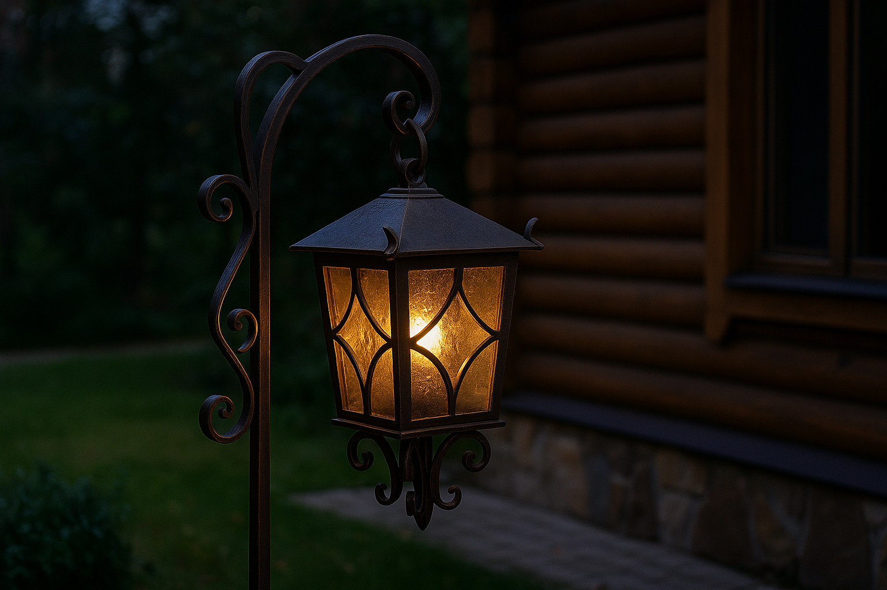

Кованый фонарь
от 9 000 ₽Металлический садовый фонарь ручной работы с декоративными элементами ковки. Создаёт атмосферу уюта и подчёркивает стиль участка. Отлично подходит для загородного дома или бани.

Металлический садовый фонарь ручной работы с декоративными элементами ковки. Создаёт атмосферу уюта и подчёркивает стиль участка. Отлично подходит для загородного дома или бани.